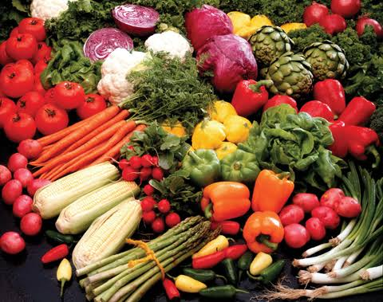
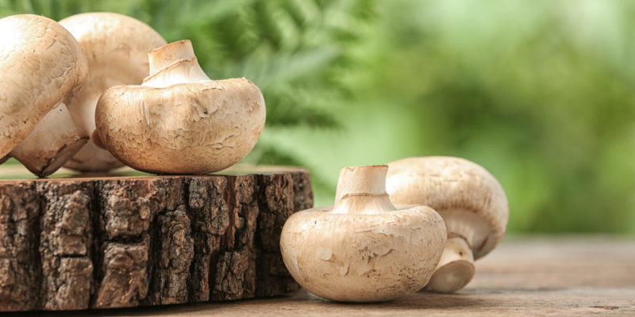
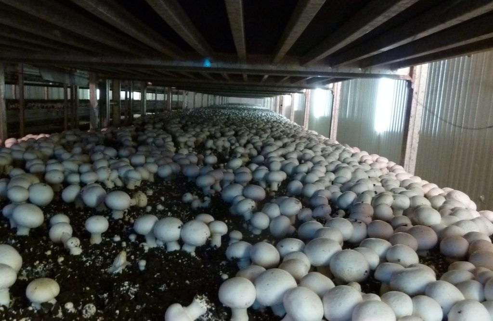
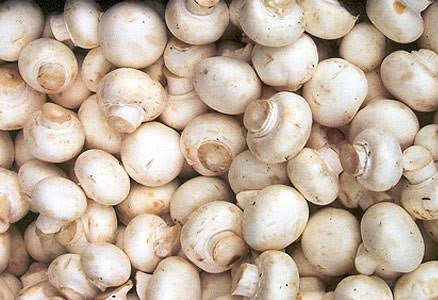
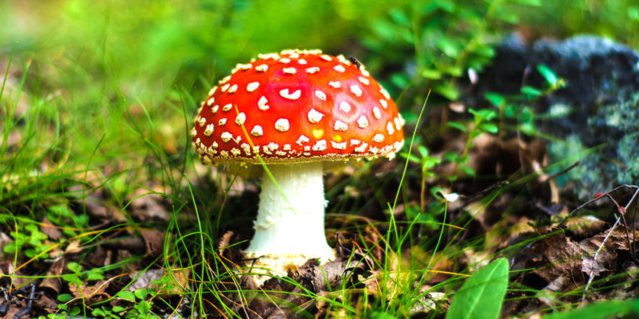
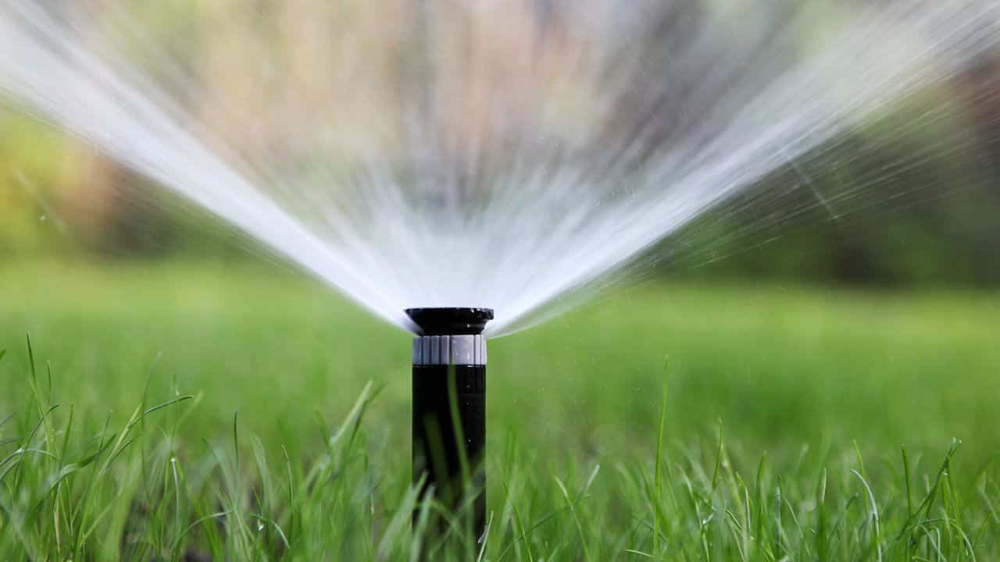
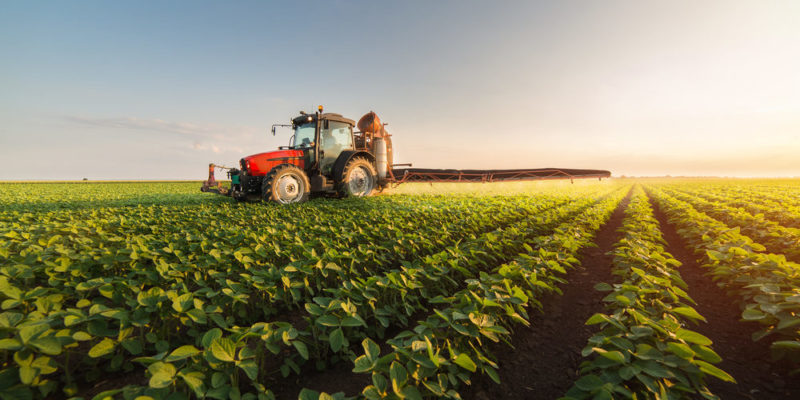
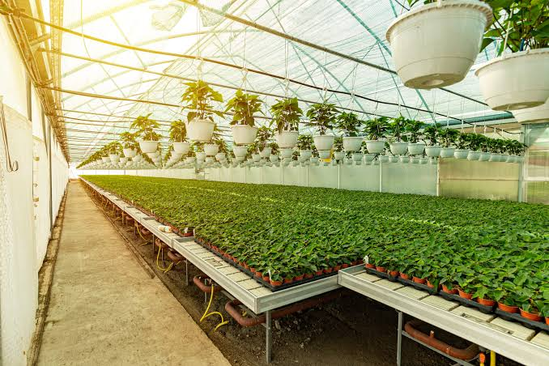

Cultura general · Proyecto académico
Un recorrido por la biología de las plantas que alimentan al mundo y las técnicas con las que el ser humano las cultiva desde hace miles de años.
Explorar el recorrido01 · Fundamentos
Dos disciplinas distintas, profundamente entrelazadas desde el origen de la civilización humana.
Es la rama de la biología dedicada al estudio de las plantas: su estructura, funciones, reproducción, clasificación y distribución. Estudia desde algas microscópicas hasta árboles centenarios, abarcando su anatomía, fisiología y relación con el ambiente.
Es el conjunto de técnicas y conocimientos para cultivar la tierra, sembrar, cuidar y cosechar plantas con fines alimenticios, textiles o industriales. Mientras la botánica busca comprender a la planta, la agricultura busca aprovecharla de manera sistemática.
La relación entre ambas disciplinas nace miles de años atrás, cuando los primeros grupos humanos dejaron de depender exclusivamente de la recolección de plantas silvestres para comenzar a seleccionarlas, cuidarlas y sembrarlas deliberadamente. A este proceso se le conoce como domesticación, y transformó por completo la historia de la humanidad: significó el inicio del sedentarismo, el nacimiento de las primeras civilizaciones y, con el tiempo, el desarrollo de la botánica como ciencia.
Grupos humanos comienzan a cuidar plantas silvestres de interés alimenticio antes de sembrarlas de forma intencional.
Domesticación de trigo, cebada y lentejas en Medio Oriente — uno de los primeros focos agrícolas del mundo.
El teocintle silvestre se transforma, mediante selección artificial, en el maíz. Surgen también el frijol y la calabaza.
Existen alrededor de 2,500 especies de plantas domesticadas; casi toda persona consume a diario algún alimento producto de este proceso milenario.
02 · Biología vegetal
Toda planta vascular completa está formada por cinco estructuras principales, cada una con una función específica e indispensable para su supervivencia. Toca o pasa el cursor sobre cada parte para descubrir su función.
Pasa el cursor o toca cualquier parte de la planta en el diagrama para ver su función biológica explicada aquí.
03 · Clasificación
Las plantas que el ser humano cultiva con fines alimenticios se agrupan en cinco grandes categorías, según la parte de la planta que se aprovecha y su función nutricional.
Gramíneas que producen un grano rico en carbohidratos: fuente principal de energía en la dieta humana.
Maíz · Trigo · ArrozDesarrollan sus semillas dentro de una vaina. Fuente importante de proteína vegetal, fibra y hierro.
Frijol · Lenteja · GarbanzoHojas, tallos, flores o frutos no dulces. Aportan fibra y vitaminas, con bajo aporte calórico.
Lechuga · Brócoli · TomatePartes subterráneas que la planta usa como órgano de reserva de almidón. Ricos en carbohidratos complejos.
PapaDesarrollo del ovario de una flor fecundada. Aportan azúcares naturales, vitamina C y fibra.
Plátano · Aguacate| Categoría | Parte aprovechada | Aporte principal | Ejemplos |
|---|---|---|---|
| Cereales | Semilla / grano | Carbohidratos, energía | Maíz, trigo, arroz |
| Leguminosas | Semilla en vaina | Proteína vegetal | Frijol, lenteja |
| Hortalizas | Hoja, tallo, flor o fruto | Fibra, vitaminas | Lechuga, brócoli, tomate |
| Tubérculos | Raíz o tallo subterráneo | Almidón | Papa |
| Frutas | Fruto maduro | Azúcares, vitamina C | Plátano, aguacate |

04 · Recurso interactivo
Doce especies vegetales —y una planta industrial— que ejemplifican la diversidad de la agricultura alimentaria. Filtra por categoría o toca una tarjeta para ver su ficha completa.
05 · Otro reino biológico
Aunque comúnmente se agrupan junto con las plantas en la cocina y el lenguaje cotidiano, biológicamente los hongos no son plantas: constituyen su propio reino, el reino Fungi.

Agaricus bisporus
El hongo comestible más cultivado del mundo. Se desarrolla sobre un sustrato de compost especialmente preparado y fermentado.
Pleurotus ostreatus
A diferencia del champiñón, crece sobre sustratos simples como paja o residuos agrícolas, sin necesidad de compostaje previo.



A diferencia del champiñón o la seta de ostra, existen especies silvestres tóxicas como Amanita muscaria, fácilmente reconocible por su sombrero rojo con puntos blancos. Su consumo puede ser peligroso, por lo que la identificación experta es indispensable antes de recolectar hongos silvestres.
06 · Recurso interactivo
Toda planta cultivada atraviesa un proceso similar de desarrollo, sin importar la especie. Mueve el control para recorrer las etapas, desde que la semilla se deposita en la tierra hasta que el alimento llega a la mesa.
La semilla se deposita en el suelo a la profundidad adecuada según la especie.
Aunque el tiempo exacto de cada etapa varía enormemente según la especie —como se observa comparando los 5 días de germinación del maíz contra los 25 días del plátano—, todo cultivo atraviesa este mismo recorrido biológico fundamental.
07 · Manejo agrícola
Tres factores determinan la salud de cualquier cultivo: el tipo de suelo, el sistema de riego, y el manejo preventivo de plagas y enfermedades.
Drenaje muy rápido, baja retención de agua y nutrientes. Riegos frecuentes.
Alta retención de agua, drenaje lento. Riesgo de encharcamiento.
Buena retención de humedad, aunque sensible a la erosión.
Combinación equilibrada. Considerado el suelo ideal para la mayoría de cultivos.
Aplica el agua directamente en la zona de la raíz. El método más eficiente; reduce enfermedades foliares.
Simula la lluvia mediante aspersores. Compatible con fertilizantes, aunque sensible al viento.
Usado tradicionalmente en cultivos como el arroz, donde el encharcamiento es parte del propio sistema.

Alternar especies en una misma parcela interrumpe el ciclo de vida de plagas específicas y mejora la fertilidad del suelo.
El exceso de humedad favorece hongos patógenos; el déficit hídrico facilita el ataque de plagas como los ácaros.
El uso de organismos benéficos o insecticidas orgánicos reduce el impacto ambiental frente a productos sintéticos.
Sensores de humedad y drones permiten un uso más preciso de los recursos, reduciendo el desperdicio.

A partir de los datos de germinación y requerimiento de agua de las 12 especies del catálogo, se calculan las siguientes medidas de tendencia central y dispersión.
Calculando...
08 · Cultura general
Tecnología, historia y ciencia aplicada se combinan hoy para transformar la manera en que se cultivan los alimentos.
La hidroponía es una técnica de cultivo que no utiliza suelo: las plantas se desarrollan directamente en agua enriquecida con una solución de nutrientes. Aunque parece completamente moderna, sus raíces se remontan a la antigüedad: los Jardines Colgantes de Babilonia y las chinampas aztecas en México son consideradas formas tempranas de este principio.

Ajusta automáticamente la cantidad de agua según temperatura, evaporación y necesidades reales detectadas por sensores.
Combina sensores, inteligencia artificial y robótica para detectar enfermedades tempranas y el momento óptimo de cosecha.
Permite cultivar en estructuras apiladas, optimizando el espacio en zonas urbanas con poca tierra cultivable disponible.
09 · Cierre
El código QR se genera automáticamente al publicar con la URL final del sitio.